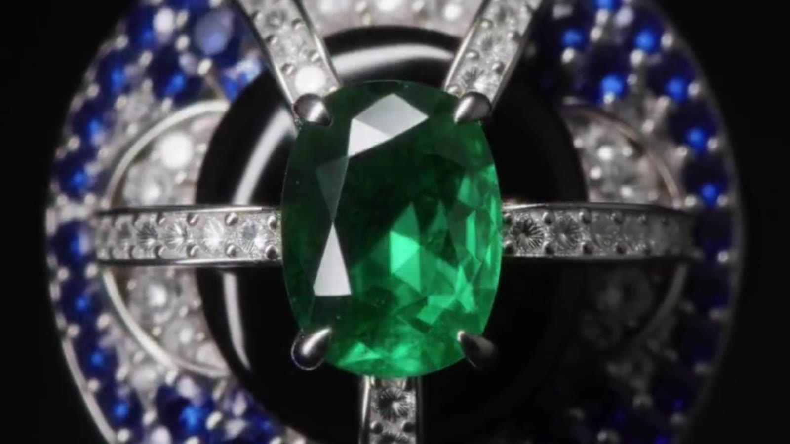
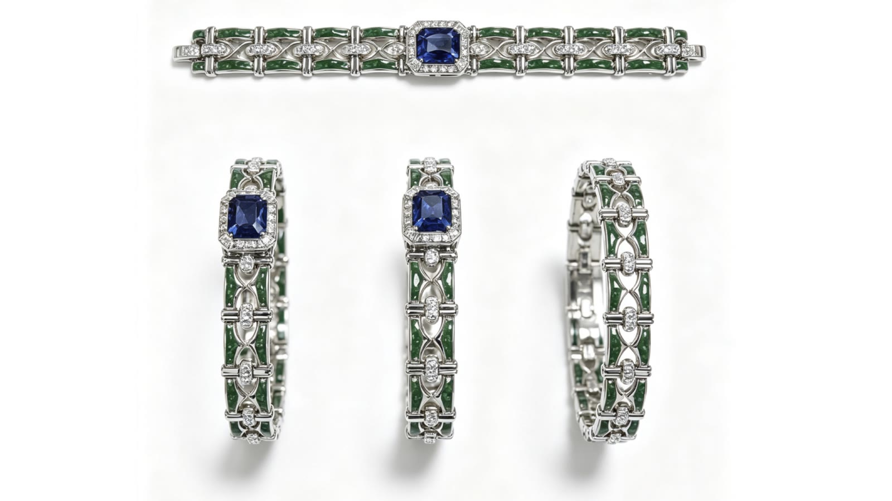
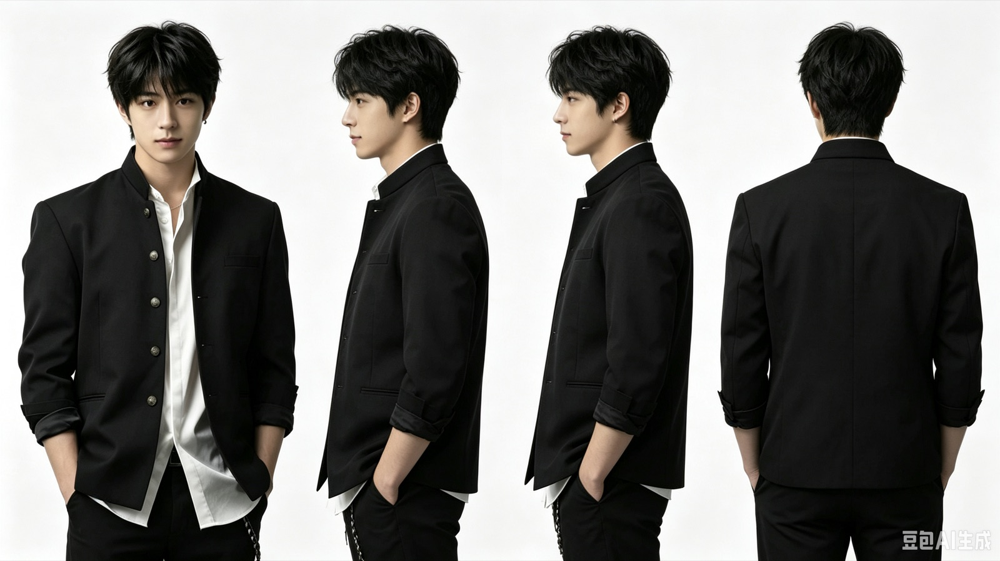
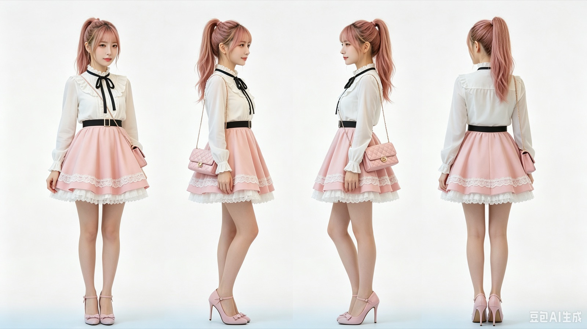
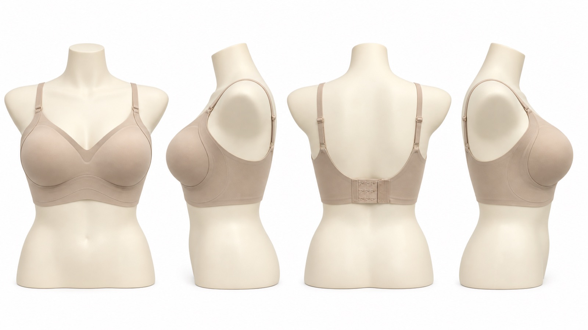
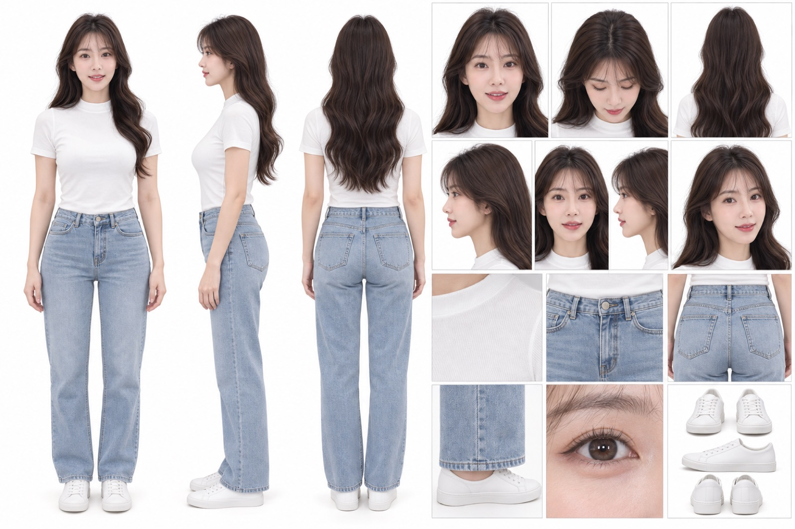

AI生成视频 · 16:9 · 15s
PRODUCT VISUAL AIGC
珠宝产品质感
视频生成
- 作品内容
- 祖母绿戒指暗场短片
- 制作范围
- 资产整理、动态生成、剪辑与成片
- 质量重点
- 宝石颜色、金属结构、光影与镜头连续性
- 交付物
- 1280×720 成片 1 条 + 产品资产图 2 组
- 可核对
- 成片可完整播放，资产图在下方并列展示
MILES · PORTFOLIO 2026
从前期资产、分镜到生成、剪辑与交付。重点展示产品质感控制、人物连续性与短片叙事。
01 / FEATURED WORK
珠宝产品 AI 视觉项目。以下只展示现有成片与资产图，不虚构品牌、客户、平台或未提供的项目背景。
PRODUCT VISUAL AIGC

产品资产图 生成镜头PROCESS EVIDENCE
以真实产品信息为锚点，先确认宝石颜色、戒托结构与金属镶工，再推进到可用视频镜头。左右两侧是同一件戒指：左侧白底资产图，右侧成片镜头。
拖动左侧分割线，可直接比较产品资产与最终镜头。

02 / AI VIDEO
覆盖数字人、AI 电商口播、情感叙事、游戏角色视觉与完整 Showreel。




SELECTED WORKS / 00:50
把现有作品集中为一条 50 秒混剪，作为作品集的整体观看入口。
03 / PIPELINE
每一步都有明确产物，可审查、可修改、可交接。
明确目标、画幅、时长、节奏与参考边界。
景别、动作、运镜、声音与转场设计。
准备人物、产品、场景与关键画面，锁定一致性。
按镜头推进动态，筛选素材并完成配音与剪辑。
检查连续性、可用性与画面质量，整理归档。
04 / EXPERIENCE
以下经历与简历 PDF 一致，可按需核对。
2025.09 — 2026.04
自由职业 · 项目制
独立项目
项目负责人